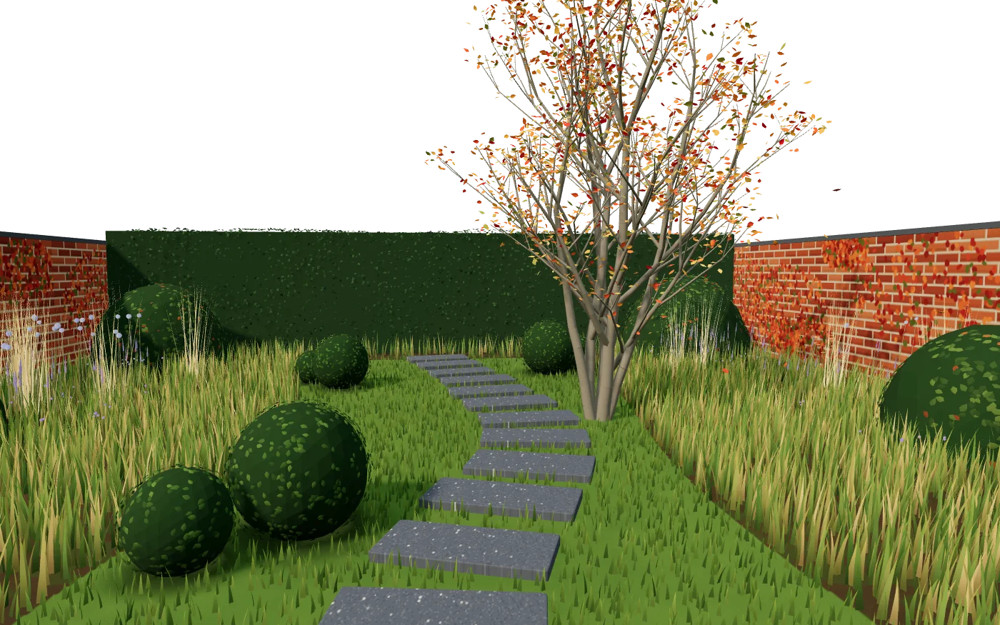

Le même jardin, quatre fois.
Printemps
mars à mai
L’amélanchier fleurit en blanc avant ses feuilles. Les graminées repartent du pied.
Ce qu’on y fait, saison par saison.
-
Printemps
mars à mai
On plante les vivaces, on sème la prairie, on paille les massifs. Les graminées sont coupées début mars, juste avant qu’elles repartent.
-
Été
juin à août
La citerne arrose au pied, tôt le matin. Taille légère des haies en juillet, et on repère les zones sèches pour corriger le plan.
-
Automne
septembre à novembre
La saison de plantation : arbres et haies à racines nues, bulbes, vivaces. Les feuilles tombées restent au pied des massifs.
-
Hiver
décembre à février
On garde les graminées debout pour les oiseaux, on taille les fruitiers et on dessine les plans du printemps.